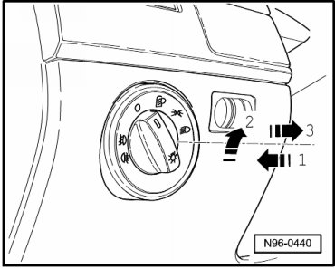
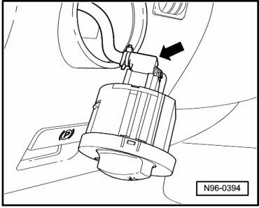
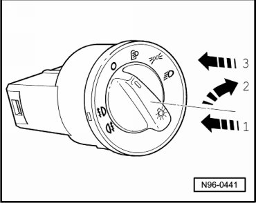

Light Switch
Instrument Panel Lamps and Switches
Light Switch
The following components are integrated with Light Switch (E1):
• Rear Fog Lamp Button (E314)
• Fog Lamp Button (E315)
• Headlamp Switch Light (L9)
Removing
- Switch off ignition, switch off all electrical consumers and remove ignition key.
- Turn rotating handle of Light switch (E1) to position "0".
- Push in rotating handle of Light switch (E1) - arrow 1 - and turn slightly toward right - arrow 2 -.

- Hold rotary handle in this position and remove Light switch (E1) on rotary handle from instrument cluster - arrow 3 -.
- Release and disconnect the connector - arrow -.

Installing
- Connect electrical connector.
- Hold Light switch (E1) firmly and press in rotary handle of Light switch (E1) - 1 - and turn slightly toward right - 2 -.

- Hold rotary knob in this position and insert Light Switch (E1) into instrument panel - 3 -.
- Turn rotary handle to position "0", release and engage switch.